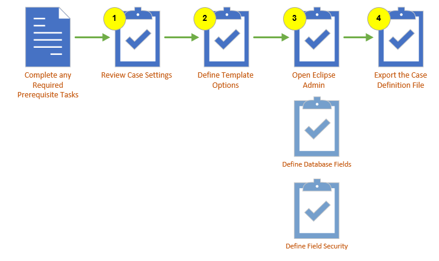
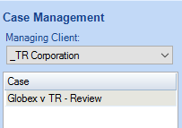
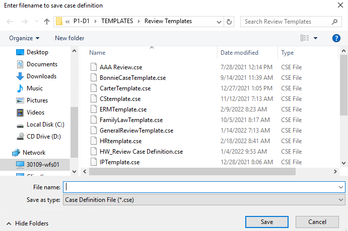
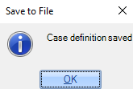

Workflow: Create a Case Definition Template
After you create a case using the default template, the definition of the case
can be customized and exported to make it easy to create future cases that share similar
characteristics. The load file you create is an XML file with a file extension
of .CSE. This file can be selected instead of the default template when creating your case in Case Management. The process of creating the .CSE file is executed within the Eclipse Admin module.
The Case Definition file contains the following case characteristics, but
no case data. (A case definition file can be created whether or not data
has been added to the case.) All characteristics can be imported into a new case;
characteristics marked with an asterisk (*) can be imported into an existing
case.
-
Database field definitions (field name
and type)
-
Field-level security details
-
Redaction palette*
-
Tags (tag groups and tags)*
-
Relationship definitions*
-
Coding Forms*
-
Searches
This topic contains high-level procedures to help you create a .CSE (Case Definition File) template. The following illustration shows the basic process outline. The numbers correspond to the procedures in this topic. You can click on the numbered steps in the image to jump to a specific task in the workflow.

Complete the Required Prerequisites
|
Create Managing Client and Client
|
Complete the process of creating your managing client and client.
|
Create New Managing Clients and Clients
|
|
Create your Review Case
|
Create your review case using the default case template.
|
Create a New Case in [%=Primary.Name%]
|
|
Review Database Fields
|
Review the database field names. You can modify or add new fields in Eclipse Admin before creating a custom case definition template.
|
Work with the Results Grid Columns
|
Step 1: Review Case Settings
Open the case that you created from the default template and review all case settings to determine what definitions exist in the case. See Manage Review Case Settings for more information.
Step 2: Define Template Options
-
Select the options you would like to include in your Case Definition File template. The following options can be defined in this step:
-
Tag palette (tag groups and tags). For more information, see Create Tag Palettes .
-
Redaction palette. For more information, see Manage Redaction Categories.
-
Relationship Definitions. For more information, see Overview: Relationships
-
Coding Forms. For more information, see Overview: Coding Forms.
-
Saved Searches. For more information, see Work with Saved Searches.
Step 3. Open Eclipse Admin
After you have defined your template options in the review case, the remainder of the tasks are performed in the Eclipse Admin module.
-
Start Eclipse Admin and log in.
-
On the Case Management ribbon, select Case Management.
-
Select your Managing Client and Case.

Define Database Fields
You can add or modify the database fields in your case prior to creating your template for use in a new case.
To change field definitions:
-
Click the Database
Fields tab in the Case Management screen. Field details for the
case are listed.
-
Click  corresponding
to the field to be edited. (You may need to scroll horizontally to find
this button.)
corresponding
to the field to be edited. (You may need to scroll horizontally to find
this button.)
-
Make needed changes in the Edit Field dialog
box and click Save.
|

|
Note:System fields are not included in .CSE files. If a .CSE file is used to create a new case, new system fields will be created automatically.
|
Complete the following steps to add new fields:
-
Click the Database
Fields tab. Field details for the case are listed.
-
Click New
Field. The New Field dialog box will open.

-
Complete the Field Properties for the field.
-
When finished, click Save.
Define Field Security
By default, all fields are set to Update for a case
and no settings appear for groups or users. If no settings are explicitly
made for a group, security will be inherited from the case. If field-level
security is defined for a group, then these settings will apply to all
users in the group. These settings are included in the case definition file.
To change field-level security:
-
Click the Database
Fields tab.
-
In the Field
Security field, select either [Case] or a group name, then click
 .
.

-
Ensure the needed item is selected in case/group
list, then select the needed security level for one or more fields (View, Update,
or Deny).
-
When finished, click OK.
Step 4. Export a Case Definition file
-
Open the Eclipse Admin module. See Step 3. Open Eclipse Admin.
-
On the Case Details tab, select .
-
Enter a file name for your new template and save it to a location that is accessible when you create cases in review.

-
You will get a message that it has been saved. Click OK.

|
|
Note: You can also right-click the case whose definition is to be exported
and select Save case definition to a
file.
|
Related Topics
Create a New Case in [%=Primary.Name%]